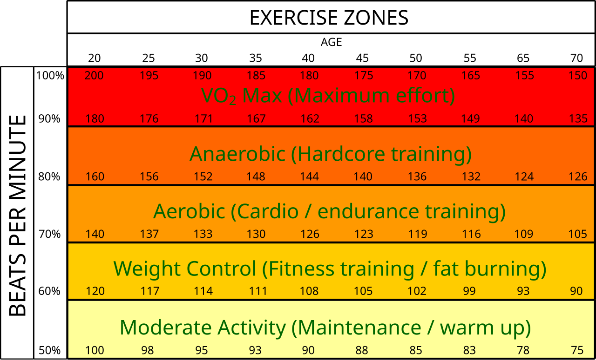

Vượt Qua Lầm Tưởng Về Con Số 10.000 Bước Chân
Trong nhiều thập kỷ, thước đo vàng của các thiết bị theo dõi vận động phổ thông luôn là 10.000 bước chân mỗi ngày—một cột mốc thực chất bắt nguồn từ chiến dịch quảng cáo máy đếm bước chân (Manpo-kei) tại Nhật Bản năm 1965 chứ không phải từ một nghiên cứu sinh lý học lâm sàng. Dù việc đi lại thường xuyên trong ngày giúp ngăn ngừa ứ trệ chuyển hóa và hỗ trợ kiểm soát đường huyết sau bữa ăn, tổng số bước chân hoàn toàn không phản ánh được cường độ làm việc của hệ tim mạch.
Mười nghìn bước chân dạo phố thong thả rải rác suốt 12 tiếng đồng hồ không hề tạo ra áp lực đủ lớn để tăng thể tích nhát bóp của tim, mở rộng mạng lưới mao mạch hay kích thích sinh tổng hợp ti thể như 30 phút đi bộ nhanh lên dốc hoặc chạy bộ nhịp độ cao. Để thu hẹp khoảng cách giữa vận động thông thường và y học thể thao lâm sàng, các thiết bị đeo hiện đại—dẫn đầu bởi Fitbit Active Zone Minutes (AZM), Garmin Intensity Minutes và Apple Watch Exercise Minutes—đã chuyển trọng tâm từ bạn bước được bao nhiêu bước sang trái tim bạn đang làm việc tích cực đến mức nào so với nền tảng sinh lý cá nhân.

Đồng Hồ Tính Toán Số Phút Vận Động Tích Cực (AZM) Như Thế Nào: Công Thức Karvonen
Các thế hệ vòng đeo tay đời đầu chỉ dựa vào công thức nhịp tim tối đa chung chung 220 − Tuổi. Tuy nhiên, hai người cùng 35 tuổi có cùng nhịp tim tối đa (185 bpm) có thể sở hữu nền tảng thể lực hoàn toàn khác biệt nếu một người có nhịp tim lúc nghỉ (RHR) là 48 bpm trong khi người kia ở mức 78 bpm.
Để cá nhân hóa các vùng nhịp tim cho riêng bạn, đồng hồ thông minh hiện đại áp dụng Công thức Dự trữ Nhịp tim Karvonen (Heart Rate Reserve – HRR):
- Tính Dự trữ Nhịp tim (HRR):
HRR = Nhịp tim Tối đa (HRmax) − Nhịp tim Lúc nghỉ (RHR) - Xác định Ngưỡng Nhịp tim Mục tiêu Cá nhân:
Nhịp tim Mục tiêu = RHR + (HRR × % Cường độ)
Nhờ việc đồng hồ liên tục đo lường Nhịp tim Lúc nghỉ qua đêm của bạn, các ngưỡng tính điểm Active Zone Minutes (AZM) sẽ tự động điều chỉnh linh hoạt khi thể lực tim mạch của bạn tiến bộ hoặc khi cơ thể mệt mỏi làm nhịp tim nền tăng nhẹ.
| Phân Vùng Cường Độ (AZM) | % Dự Trữ Nhịp Tim (% HRR) | % Nhịp Tim Tối Đa (% HRmax) | Hệ Số Điểm AZM | Lợi Ích Sinh Lý & Chuyển Hóa Trọng Tâm |
|---|---|---|---|---|
| Dưới Ngưỡng (Vận động nhẹ) | < 40% HRR | < 50% HRmax | 0 AZM / phút | Duy trì tuần hoàn máu cơ bản, bôi trơn khớp và sinh nhiệt vận động hàng ngày (NEAT). |
| Vùng Đốt Mỡ / Trung Bình (Fat Burn) | 40% – 59% HRR | ~50% – 69% HRmax | 1 AZM / phút | Huy động sợi cơ bền nhóm I, oxy hóa axit béo tự do làm năng lượng và mở rộng mật độ mao mạch nền tảng. |
| Vùng Tim Mạch / Cường Độ Cao (Cardio) | 60% – 84% HRR | ~70% – 84% HRmax | 2 AZM / phút | Tăng thể tích nhát bóp tâm thất trái, nâng cao chỉ số VO₂ Max và tối ưu hóa cung lượng tim. |
| Vùng Đỉnh / Tối Đa (Peak) | ≥ 85% HRR | ≥ 85% HRmax | 2 AZM / phút | Huy động sợi cơ nhanh nhóm II, tăng khả năng đệm axit lactic và phát triển công suất kỵ khí tối đa. |
Vì Sao Tập Cường Độ Cao Được Nhân Đôi Điểm Số (2×): Tiêu Chuẩn Lâm Sàng Từ WHO & AHA
Khi bạn chạy bộ trong vùng Cardio hoặc Peak suốt 20 phút, đồng hồ sẽ cộng cho bạn 40 Phút Vận Động Tích Cực (40 AZMs). Tại sao nỗ lực cường độ cao lại được tính gấp đôi?
Hệ số nhân 2 đổi 1 này bắt nguồn trực tiếp từ Hướng dẫn Hoạt động Thể chất của Tổ chức Y tế Thế giới (WHO 2020) và Hiệp hội Tim mạch Hoa Kỳ (AHA). Các nghiên cứu dịch tễ học quy mô lớn trên hơn 500.000 người trưởng thành đã chứng minh rằng cơ thể đạt được mức giảm thiểu mạnh mẽ nguy cơ tử vong do mọi nguyên nhân, bệnh mạch vành, tiểu đường tuýp 2 và suy giảm nhận thức khi tích lũy đủ một trong các ngưỡng sau:
- 150 đến 300 phút mỗi tuần vận động hiếu khí Cường độ Trung bình (hệ số 1×), HOẶC
- 75 đến 150 phút mỗi tuần vận động hiếu khí Cường độ Cao (hệ số 2×), HOẶC
- Sự kết hợp tương đương đạt tối thiểu 150+ Active Zone Minutes mỗi tuần (tương đương khoảng 22 AZM mỗi ngày).
Về mặt sinh lý học, khi vận động vượt ngưỡng 60% Dự trữ Nhịp tim (HRR), dòng máu chảy nhanh tạo ra lực ma sát thành mạch lành mạnh, kích thích lớp nội mô mạch máu tiết ra Oxit Nitric (NO)—giúp thành động mạch đàn hồi dẻo dai và hạ huyết áp lúc nghỉ hiệu quả hơn rất nhiều so với việc chỉ đi bộ chậm.
Góc Nhìn Thực Tế Trên Thiết Bị Đeo: Đọc Hiểu Biểu Đồ Hàng Ngày
Khi theo dõi biểu đồ Active Zone Minutes ngày và tuần trên ứng dụng điện thoại, bạn sẽ nhận ra 3 quy luật thực tế rất thú vị:
- Nghịch lý "10.000 Bước Chân Nhưng Chỉ Đạt 5 AZM": Bạn có thể dành cả ngày thứ Bảy đi siêu thị và dọn dẹp nhà cửa với 11.500 bước chân, nhưng cuối ngày chỉ có 5 AZM. Đó là bởi nhịp tim của bạn luôn nằm dưới ngưỡng
40% HRR(~105 bpm)—hệ cơ xương có di chuyển nhưng cơ tim chưa bao giờ nhận được kích thích đủ lớn để thích nghi nâng cao. - Tín hiệu Rung Chuyển Vùng Trên Cổ Tay: Khi đang đi bộ nhanh lên dốc hoặc đạp xe, đồng hồ sẽ rung nhẹ 1 lần khi bạn bước vào Vùng Đốt Mỡ (1×) và rung 2 lần khi chạm Vùng Cardio (2×). Phản hồi xúc giác theo thời gian thực này giúp bạn dễ dàng biến một buổi đi dạo thông thường thành bài tập tim mạch chuẩn y khoa chỉ bằng cách tăng nhẹ sải chân hoặc nâng độ dốc máy chạy thêm 2%–3%.
- Xu Hướng Giảm Nhịp Tim Lúc Nghỉ (RHR) Dài Hạn: Những người dùng nâng mức trung bình AZM hàng tuần từ
< 60 phútlên150–250 phútđều đặn trong 8 tuần thường ghi nhận Nhịp tim Lúc nghỉ qua đêm giảm từ 3 đến 6 bpm đi kèm chỉ số VO₂ Max ước tính tăng trưởng bền vững.
4 Thói Quen Thực Tế Để Chinh Phục 150+ AZM Mỗi Tuần
- Thiết Lập "Mức Sàn 22 Phút Mỗi Ngày": Chia nhỏ mục tiêu 150 phút hàng tuần thành 22 AZM mỗi ngày giúp bạn không bị dồn áp lực vào cuối tuần. Chỉ cần 22 phút đi bộ nhanh giờ nghỉ trưa (vùng Fat Burn) hoặc 11 phút chạy bộ / leo cầu thang cường độ cao (vùng Cardio) là bạn đã hoàn thành chỉ tiêu trong ngày.
- Nâng Cấp Buổi Đi Bộ Bằng Độ Dốc Hoặc Balo (Rucking): Nếu đi bộ đường bằng không còn đưa nhịp tim bạn vào vùng Đốt Mỡ do thể lực đã tốt lên, hãy chỉnh độ dốc máy chạy lên 4%–6%, chọn cung đường có dốc thoai thoải, hoặc đeo một chiếc balo nhẹ. Cách này đưa nhịp tim vào vùng
40%–59% HRRmà không gây áp lực va đập lên khớp gối. - Áp Dụng Tỷ Lệ Vàng 80/20 Hàng Tuần: Hãy tích lũy khoảng 70%–80% tổng số AZM trong Vùng Đốt Mỡ / Trung bình (xây dựng sức bền hiếu khí mà không gây quá tải thần kinh tự chủ) và 20%–30% trong Vùng Cardio/Peak (1–2 buổi tập cường độ cao mỗi tuần để bứt phá VO₂ Max).
- Tận Dụng Các "Bữa Ăn Nhẹ Vận Động" (Exercise Snacks): Các hướng dẫn y khoa mới nhất đã bãi bỏ quy định cũ bắt buộc mỗi hiệp tập phải kéo dài liên tục trên 10 phút. Ngay cả 5 phút leo cầu thang nhanh hay đạp xe tại chỗ giữa các cuộc họp cũng được cộng dồn vào tổng AZM trong ngày và giữ độ nhạy insulin ở mức tối ưu suốt buổi chiều.
Tài Liệu Tham Khảo & Nguồn Y Khoa
- Bull, F. C., Al-Ansari, S. S., Biddle, S., Borodulin, K., Buman, M. P., Cardon, G., ... & Willumsen, J. F. (2020). World Health Organization 2020 guidelines on physical activity and sedentary behaviour. British Journal of Sports Medicine, 54(24), 1451–1462. Báo Cáo Nghiên Cứu Gốc (NCBI PubMed: 33239350) ↗
- Karvonen, M. J., Kentala, E., & Mustala, O. (1957). The effects of training on heart rate; a longitudinal study. Annales Medicinae Experimentalis et Biologiae Fenniae, 35(3), 307–315. Báo Cáo Nghiên Cứu Gốc (NCBI PubMed: 13470504) ↗
- Fitbit Health Science. What Are Active Zone Minutes or Active Minutes on My Fitbit Device? Tài Liệu Gốc Xác Thực ↗
- Garmin Health Science. Intensity Minutes: How Garmin Tracks Moderate and Vigorous Activity Based on WHO & AHA Standards. Cổng Khoa Học Garmin Health Science ↗